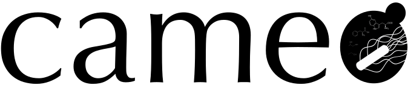
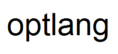
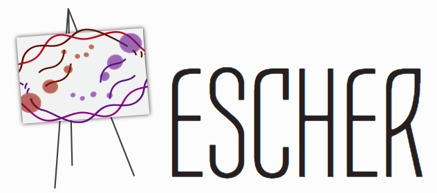

<!--Copyright 2018 Novo Nordisk Foundation Center for Biosustainability, DTU.-->

<!--Licensed under the Apache License, Version 2.0 (the "License");-->
<!--you may not use this file except in compliance with the License.-->
<!--You may obtain a copy of the License at-->

   <!--http://www.apache.org/licenses/LICENSE-2.0-->

<!--Unless required by applicable law or agreed to in writing, software-->
<!--distributed under the License is distributed on an "AS IS" BASIS,-->
<!--WITHOUT WARRANTIES OR CONDITIONS OF ANY KIND, either express or implied.-->
<!--See the License for the specific language governing permissions and-->
<!--limitations under the License.-->

<md-list-item layout="row" layout-padding flex>
	<div>
		<h2 class="md-title">Data-Driven Design of Cell Factories and Communities</h2>

		<p>Welcome to DD-DeCaF platform - the collection of bioinformatics services helping to design cells and microbial communities.</p>

		<h2 class="md-title">Software Tools</h2>
		<md-list-item class="md-2-line md-long-text" ng-href="http://cameo.bio/">
			
			<div class="md-list-item-text">
				<p>Cameo is a high-level python library developed to aid the strain design process in metabolic engineering projects.</p>
			</div>
		</md-list-item>
		<md-list-item class="md-2-line md-long-text" ng-href="https://zenodo.org/record/228165#.WG0UiR-uOkD">
			
			<div class="md-list-item-text">
				<p>Optlang is a Python package implementing a modeling language for solving mathematical optimization problems, i.e. maximizing or minimizing an objective function over a set of variables subject to a number of constraints.</p>
			</div>
		</md-list-item>
		<md-list-item class="md-2-line md-long-text" ng-href="https://escher.github.io/">
			
			<div class="md-list-item-text">
				<p>Escher is a web-based tool for building, viewing, and sharing visualizations of biological pathways.</p>
			</div>
		</md-list-item>
	</div>
</md-list-item>
